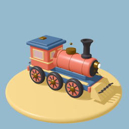
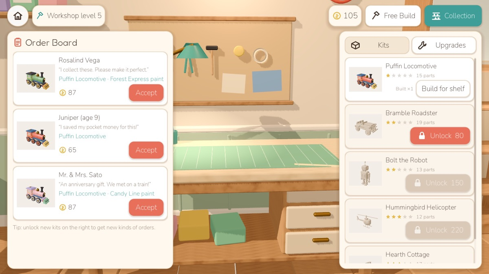

iPhone · iPad · Android
Kitbench
A cozy little toy-kit workshop. Open beautifully packaged kits, snap original parts together on your workbench, and watch the finished toys come alive.

- Five kits — a locomotive, roadster, robot, helicopter and cottage — each with a working demo
- Take orders, earn coins, upgrade your workshop and fill your display cabinet
- Free Build mode with a sketchbook for your own inventions
- No timers, no ads, no in-app purchases — plays fully offline
Türkçe
Sıcacık bir oyuncak atölyesi. Güzel kutulu setleri aç, parçaları tezgâhında birleştir ve bitirdiğin oyuncakların canlanmasını izle. Reklam yok, uygulama içi satın alma yok, tamamen çevrimdışı.
Privacy Policy / Gizlilik · Terms of Use / Kullanım Koşulları · Support / Destek